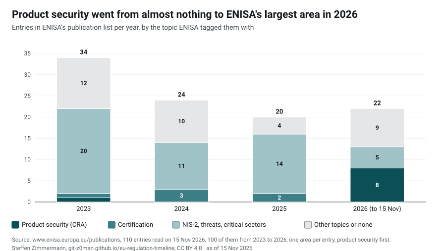
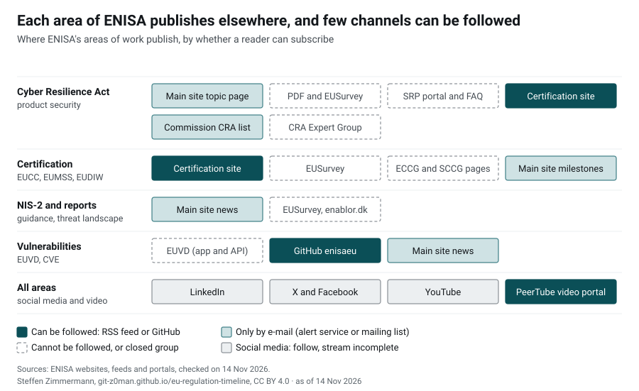
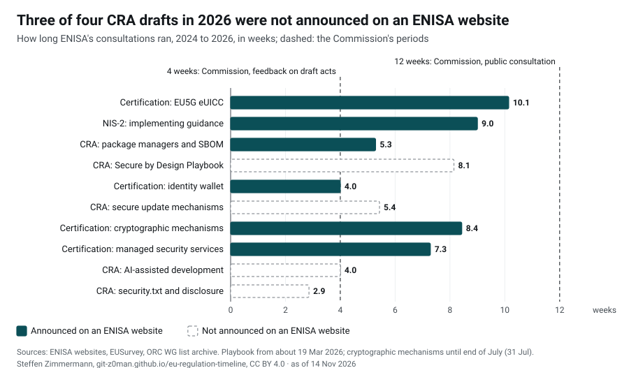
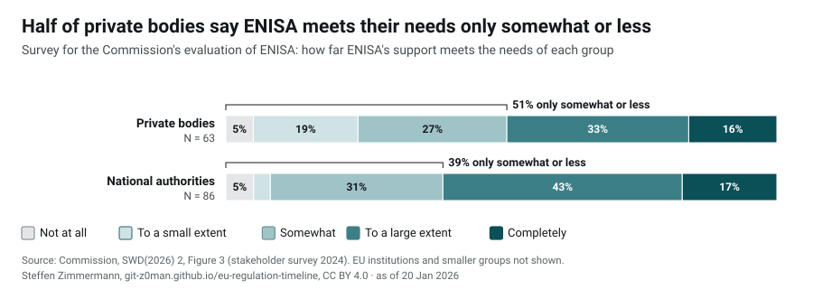
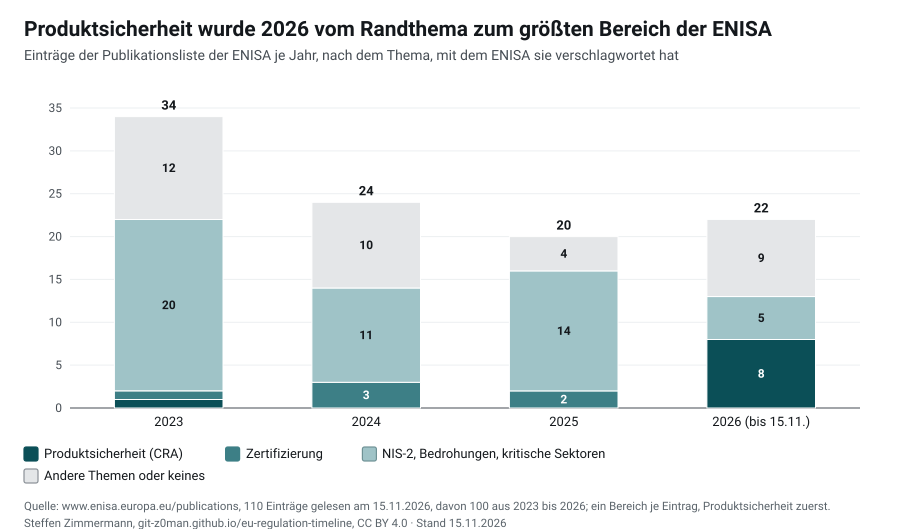
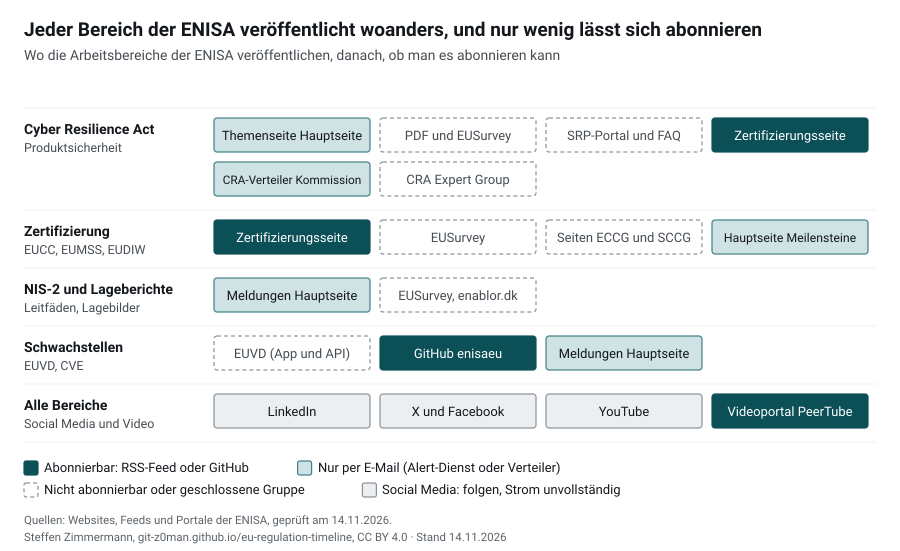
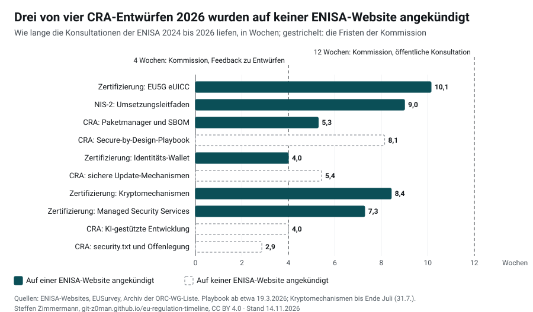
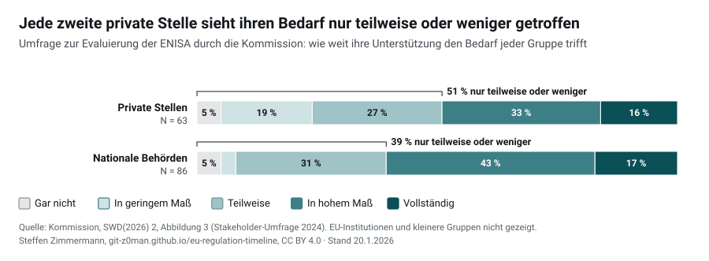

Where ENISA consults: ten channels, two feeds, and drafts that are announced elsewhere
ENISA does not publish more than it did in 2023, but in more places and by more rules. Its certification work consults in an orderly way on its own website. Its guidance for manufacturers under the Cyber Resilience Act was put out for comment in 2026 as PDF files on its server, mostly without a news item on its site, and became known through LinkedIn and community mailing lists. The Cybersecurity Act 2 would make such guidance a standing task of ENISA, so far without a duty to consult on it.
14 Nov 2026
The question
ENISA writes more and more documents that manufacturers and software developers are expected to use: technical advisories on the Cyber Resilience Act, guidance on NIS-2 and certification schemes. Many go out as drafts for comment first. How does someone without a seat in an ENISA or Commission group learn that a draft is open, and by when they can comment? We checked ENISA's websites and its consultations from 2023 to November 2026.
In brief
More places, not more documents. ENISA's publication list counts 34 items for 2023, 24 for 2024, 20 for 2025 and 22 up to 14 November 2026. What grew is the number of channels.
Two of ten channels offer an RSS feed, and GitHub can be watched. The main website has had no RSS since its relaunch at the end of 2024, and there is no page listing open consultations and surveys.
Certification consults in an orderly way, on its own website, for four to ten weeks.
Guidance for manufacturers does not. Three of the four drafts of 2026 under the Cyber Resilience Act had no announcement on an ENISA website; the shortest ran about three weeks.
The Cybersecurity Act 2 would make guidance a standing task of ENISA without, so far, a duty to consult on it.
What ENISA publishes

ENISA's publication list per year and area. Product security under the Cyber Resilience Act had one entry in 2023 and none in 2024 or 2025; in 2026 it has eight of 22. Drafts for consultation and the documents of the certification website are not in this list. SVG · PNG · PDFThe figures as a table
Product security (CRA)
Certification
NIS-2, threats, critical sectors
Other topics or none
Total
2023
1
1
20
12
34
2024
0
3
11
10
24
2025
0
2
14
4
20
2026 (to 15 Nov)
8
0
5
9
22
Fewer entries overall: from 34 in 2023 to 22 in 2026 so far.
Product security is the new focus: one entry in 2023, none in 2024 and 2025, eight in 2026, most of them guidance for manufacturers under the Cyber Resilience Act.
Not in this list: the drafts for consultation and the documents of the certification website.
Ten channels, two feeds
ENISA publishes through these channels:
its main website (news, publications, topic pages);
a certification website of its own;
the CRA single reporting platform and its FAQ;
the EU vulnerability database (EUVD);
PDF files on its file server, with a survey on EUSurvey;
GitHub;
several portals for tools and networks;
YouTube and a video portal of its own;
LinkedIn, X and Facebook.

Where ENISA publishes, by area of work. Only the certification website, GitHub and the video portal offer a feed; the main website has had an e-mail alert service instead of RSS since its relaunch. SVG · PNG · PDFThe figures as a table
Area
Channel
Can it be followed?
Cyber Resilience Act
Main site topic page
Only by e-mail (alert service or mailing list)
Cyber Resilience Act
PDF and EUSurvey
Cannot be followed, or closed group
Cyber Resilience Act
SRP portal and FAQ
Cannot be followed, or closed group
Cyber Resilience Act
Certification site
Can be followed: RSS feed or GitHub
Cyber Resilience Act
Commission CRA list
Only by e-mail (alert service or mailing list)
Cyber Resilience Act
CRA Expert Group
Cannot be followed, or closed group
Certification
Certification site
Can be followed: RSS feed or GitHub
Certification
EUSurvey
Cannot be followed, or closed group
Certification
ECCG and SCCG pages
Cannot be followed, or closed group
Certification
Main site milestones
Only by e-mail (alert service or mailing list)
NIS-2 and reports
Main site news
Only by e-mail (alert service or mailing list)
NIS-2 and reports
EUSurvey, enablor.dk
Cannot be followed, or closed group
Vulnerabilities
EUVD (app and API)
Cannot be followed, or closed group
Vulnerabilities
GitHub enisaeu
Can be followed: RSS feed or GitHub
Vulnerabilities
Main site news
Only by e-mail (alert service or mailing list)
All areas
LinkedIn
Social media: follow, stream incomplete
All areas
X and Facebook
Social media: follow, stream incomplete
All areas
YouTube
Social media: follow, stream incomplete
All areas
PeerTube video portal
Can be followed: RSS feed or GitHub
Only the certification website and the video portal offer an RSS feed; GitHub can be watched. The main website lost its RSS feeds with the relaunch at the end of 2024; an e-mail alert service followed about a year later.
How the consultations ran

How long ENISA's consultations ran, in weeks, in the order they opened. The guidance drafts under the Cyber Resilience Act of 2026 ran three to eight weeks, and three of the four had no announcement on an ENISA website; certification consultations were announced and ran four to ten weeks. SVG · PNG · PDFThe figures as a table
Consultation
From
Until
Weeks
Announced
Certification: EU5G eUICC
26 Jun 2024
5 Sep 2024
10.1
Announced on an ENISA website
NIS-2: implementing guidance
7 Nov 2024
9 Jan 2025
9.0
Announced on an ENISA website
CRA: package managers and SBOM
17 Dec 2025
23 Jan 2026
5.3
Announced on an ENISA website
CRA: Secure by Design Playbook
19 Mar 2026
15 May 2026
8.1
Not announced on an ENISA website
Certification: identity wallet
2 Apr 2026
30 Apr 2026
4.0
Announced on an ENISA website
CRA: secure update mechanisms
2 Jun 2026
10 Jul 2026
5.4
Not announced on an ENISA website
Certification: cryptographic mechanisms
2 Jun 2026
31 Jul 2026
8.4
Announced on an ENISA website
Certification: managed security services
24 Jul 2026
13 Sep 2026
7.3
Announced on an ENISA website
CRA: AI-assisted development
17 Sep 2026
15 Oct 2026
4.0
Not announced on an ENISA website
CRA: security.txt and disclosure
26 Oct 2026
15 Nov 2026
2.9
Not announced on an ENISA website
Certification: an orderly pattern
Legal basis: ENISA must consult "all relevant stakeholders by means of a formal, open, transparent and inclusive consultation process" when it prepares a candidate scheme (Art. 49(3) CSA).
One pattern: an announcement on the certification website, the documents under "publications", comments through EUSurvey.
Four to ten weeks: EU5G eUICC in 2024 about ten, the identity wallet scheme in April 2026 four, managed security services from July to September 2026 seven.
Gap: only the political milestones reach the main website; the review of the Agreed Cryptographic Mechanisms in June 2026 appeared on the certification website only.
Guidance for manufacturers: drafts announced elsewhere
ENISA announced "regular technical advisories on product security" under the Cyber Resilience Act in December 2025 and put the first one, on package managers, out for comment with a news item. The four drafts of 2026:
Relays came late and with errors: a broken survey link, a deadline with the wrong year.
The consultation leaves no trace on the final page. The pages of the final versions do not mention it; the number of contributions (28 for the playbook, 12 for secure updates) is only in the PDF.
Closed surveys are deleted, and with them the trace that a consultation took place.
Living documents change silently. The FAQ of the CRA single reporting platform, which manufacturers need for their reporting obligations from 11 September 2026, gained new questions several times a day in September 2026, without a date or a list of changes; its address moved at least twice. Community members keep their own change logs.
Deadlines move the same way. ENISA's survey NIS360 2027 was announced on its website on 1 July 2026; the news page now gives 1 December 2026 as the deadline in its text and 30 October 2026 in its image. The later date was announced in a LinkedIn post of 5 November 2026, not in a news item of its own.
What the Commission found, and what ENISA plans

Answers of private bodies and national authorities in the survey for the Commission's evaluation of ENISA. 51 % of private bodies and 39 % of national authorities said their needs were met only somewhat, to a small extent or not at all; the evaluation gives 44 % for all respondents and 50 % for industry organisations. SVG · PNG · PDFThe figures as a table
N
Not at all
To a small extent
Somewhat
To a large extent
Completely
Private bodies
63
5%
19%
27%
33%
16%
National authorities
86
5%
3%
31%
43%
17%
The Commission's evaluation of ENISA (SWD(2026) 2, January 2026): "the complex structure of ENISA's website further complicated stakeholder interaction with ENISA's outputs".
28 % of the respondents said the structure had kept them from working with ENISA's results; more than 40 % of the contributions to the call for evidence found the engagement insufficient.
ENISA's Stakeholder Strategy 2026-2028 promises "transparent, coordinated, open" engagement, but sets "consult" as the standard level for industry and announces "a restrictive approach towards engagements driven by external interest groups".
Not promised: a consultation page or a feedback report.
The Commission's own yardstick
The Better Regulation Guidelines do not bind agencies, but they expect agencies' consultations to "respect the same standards".
Commission rule
Period
Public consultation
at least 12 weeks; 14 in summer
Feedback on draft delegated and implementing acts
4 weeks
Feedback on adopted proposals
8 weeks
Period overlapping with holidays
2 weeks more
Factual summary after a consultation closes
within 8 weeks
Report on "how, and to what extent" the input was used
after the consultation
Three weeks for a piece of CRA guidance is below every one of these figures.
What the Cybersecurity Act 2 would change
All texts below are drafts, not law.
Commission proposal (COM(2026) 11): ENISA "shall draft technical specifications and guidance to support the implementation of Union legislation", expressly including the Cyber Resilience Act (Art. 18(1) and (4) CSA2). For certification schemes it keeps the duty to consult (Art. 74(4) CSA2, "in a timely manner"); for guidance it has none. That is the gap we see in practice.
Council: the Presidency's compromise text WK 13671/26 of 8 September 2026 adds "in consultation with Member States and other relevant stakeholders" to Art. 18(1) CSA2.
European Parliament: the ITRE rapporteur's draft report (PE792.222, Amendment 61) wants ENISA to consult stakeholders "in a structured manner", among others when drafting guidance under Art. 18 and 77 CSA2, on the model of Art. 9 CRA.
What none of them sets: a minimum period or a channel.
Standardisation: the proposed revision of the Standardisation Regulation (COM(2026) 780) does not mention ENISA; its new role in standardisation would come from the Cybersecurity Act 2.
Our assessment
What works: ENISA consults well where the law makes it consult and one team owns the process, in certification.
What does not: where it writes guidance for manufacturers, the consultation depends on who happens to pass the link on.
Who bears the cost: those the guidance is written for: small manufacturers and open-source projects without a seat in a group, and associations that need a few weeks to agree a common reply.
What would help
The certification website shows that ENISA can do it. Five steps:
One register of all open and closed consultations and surveys, across all areas, with a feed.
An ENISA page for each consultation on the day it opens, with the draft, the deadline and who it is for.
At least six weeks, eight for guidance, longer over holidays; any change of deadline announced as such.
Versions and a change log for living documents such as the FAQ of the reporting platform.
A record in the final version: the period, the number of contributions and how they were used.
The Cybersecurity Act 2 negotiations are the place to add a minimum period and a public register to the duty to consult that both co-legislators already want.
Sources: ENISA websites, checked on 14 Nov 2026 (www.enisa.europa.eu, certification.enisa.europa.eu, euvd.enisa.europa.eu, portal.cra-srp.enisa.europa.eu), their sitemaps, news and publication lists and RSS feeds; ENISA technical advisories and their drafts for consultation; ENISA's LinkedIn company page (posts of 26 Oct and 5 Nov 2026); Public archive of the mailing list of the Open Regulatory Compliance Working Group (Eclipse Foundation) and its GitHub issues; ENISA Stakeholder Strategy 2026-2028 (January 2026); Commission evaluation of ENISA, SWD(2026) 2 of 20 January 2026 (Figure 3); ENISA publication list (www.enisa.europa.eu/publications), entries of 2023 to 2026 with their topics, read on 15 Nov 2026; Better Regulation Guidelines, SWD(2021) 305, and the Better Regulation Toolbox (December 2025); Regulation (EU) 2019/881 (Cybersecurity Act); Commission proposal for a Cybersecurity Act 2, COM(2026) 11; Presidency compromise text WK 13671/26; ITRE draft report PE792.222; Commission proposal for a revised Standardisation Regulation, COM(2026) 780. Our own assessment from public sources, CC BY 4.0.
Wo ENISA konsultiert: zehn Kanäle, zwei Feeds und Entwürfe, die anderswo angekündigt werden
ENISA veröffentlicht nicht mehr als 2023, aber an mehr Orten und nach mehr Regeln. Ihre Zertifizierung konsultiert geordnet auf einer eigenen Website. Ihre Leitfäden für Hersteller nach dem Cyber Resilience Act gingen 2026 als PDF-Dateien auf ihrem Server in die Konsultation, meist ohne Meldung auf ihrer Website, und wurden über LinkedIn und Mailinglisten der Community bekannt. Der Cybersecurity Act 2 würde solche Leitfäden zur Daueraufgabe der ENISA machen, bisher ohne Pflicht, dazu zu konsultieren.
14. Nov. 2026
Die Frage
ENISA schreibt immer mehr Dokumente, mit denen Hersteller und Softwareentwickler arbeiten sollen: technische Advisories zum Cyber Resilience Act, Leitfäden zu NIS-2 und Zertifizierungsschemata. Viele gehen zuerst als Entwurf in die Konsultation. Wie erfährt jemand ohne Sitz in einem Gremium von ENISA oder Kommission, dass ein Entwurf offen ist und bis wann er kommentieren kann? Wir haben die Websites der ENISA und ihre Konsultationen von 2023 bis November 2026 geprüft.
Kurz gefasst
Mehr Orte, nicht mehr Dokumente. Die Publikationsliste der ENISA zählt 34 Einträge für 2023, 24 für 2024, 20 für 2025 und 22 bis zum 14. November 2026. Gewachsen ist die Zahl der Kanäle.
Zwei von zehn Kanälen bieten einen RSS-Feed, GitHub lässt sich beobachten. Die Hauptseite hat seit ihrem Relaunch Ende 2024 kein RSS mehr, und eine Seite mit offenen Konsultationen und Umfragen gibt es nicht.
Die Zertifizierung konsultiert geordnet, auf einer eigenen Website, vier bis zehn Wochen lang.
Leitfäden für Hersteller nicht. Drei der vier Entwürfe von 2026 zum Cyber Resilience Act hatten keine Ankündigung auf einer ENISA-Website; der kürzeste lief rund drei Wochen.
Der Cybersecurity Act 2 würde Leitfäden zur Daueraufgabe der ENISA machen, bisher ohne Pflicht, dazu zu konsultieren.
Was ENISA veröffentlicht

Die Publikationsliste der ENISA je Jahr und Bereich. Produktsicherheit nach dem Cyber Resilience Act hatte 2023 einen Eintrag und 2024 und 2025 keinen; 2026 sind es acht von 22. Entwürfe zur Konsultation und die Dokumente der Zertifizierungs-Website stehen nicht in dieser Liste. SVG · PNG · PDFDie Zahlen als Tabelle
Produktsicherheit (CRA)
Zertifizierung
NIS-2, Bedrohungen, kritische Sektoren
Andere Themen oder keines
Summe
2023
1
1
20
12
34
2024
0
3
11
10
24
2025
0
2
14
4
20
2026 (bis 15.11.)
8
0
5
9
22
Insgesamt weniger Einträge: von 34 im Jahr 2023 auf bisher 22 im Jahr 2026.
Produktsicherheit ist der neue Schwerpunkt: ein Eintrag 2023, keiner 2024 und 2025, acht 2026, die meisten davon Leitfäden für Hersteller nach dem Cyber Resilience Act.
Nicht in dieser Liste: die Entwürfe zur Konsultation und die Dokumente der Zertifizierungs-Website.
Zehn Kanäle, zwei Feeds
ENISA veröffentlicht über diese Kanäle:
ihre Hauptseite (Meldungen, Veröffentlichungen, Themenseiten);
eine eigene Zertifizierungs-Website;
die Meldeplattform des CRA und deren FAQ;
die EU-Schwachstellendatenbank (EUVD);
PDF-Dateien auf ihrem Dateiserver, mit einer Umfrage auf EUSurvey;
GitHub;
mehrere Portale für Werkzeuge und Netzwerke;
YouTube und ein eigenes Videoportal;
LinkedIn, X und Facebook.

Wo ENISA veröffentlicht, nach Arbeitsbereich. Einen Feed bieten nur die Zertifizierungs-Website, GitHub und das Videoportal; die Hauptseite hat seit ihrem Relaunch statt RSS einen E-Mail-Alert-Dienst. SVG · PNG · PDFDie Zahlen als Tabelle
Bereich
Kanal
Abonnierbar?
Cyber Resilience Act
Themenseite Hauptseite
Nur per E-Mail (Alert-Dienst oder Verteiler)
Cyber Resilience Act
PDF und EUSurvey
Nicht abonnierbar oder geschlossene Gruppe
Cyber Resilience Act
SRP-Portal und FAQ
Nicht abonnierbar oder geschlossene Gruppe
Cyber Resilience Act
Zertifizierungsseite
Abonnierbar: RSS-Feed oder GitHub
Cyber Resilience Act
CRA-Verteiler Kommission
Nur per E-Mail (Alert-Dienst oder Verteiler)
Cyber Resilience Act
CRA Expert Group
Nicht abonnierbar oder geschlossene Gruppe
Zertifizierung
Zertifizierungsseite
Abonnierbar: RSS-Feed oder GitHub
Zertifizierung
EUSurvey
Nicht abonnierbar oder geschlossene Gruppe
Zertifizierung
Seiten ECCG und SCCG
Nicht abonnierbar oder geschlossene Gruppe
Zertifizierung
Hauptseite Meilensteine
Nur per E-Mail (Alert-Dienst oder Verteiler)
NIS-2 und Lageberichte
Meldungen Hauptseite
Nur per E-Mail (Alert-Dienst oder Verteiler)
NIS-2 und Lageberichte
EUSurvey, enablor.dk
Nicht abonnierbar oder geschlossene Gruppe
Schwachstellen
EUVD (App und API)
Nicht abonnierbar oder geschlossene Gruppe
Schwachstellen
GitHub enisaeu
Abonnierbar: RSS-Feed oder GitHub
Schwachstellen
Meldungen Hauptseite
Nur per E-Mail (Alert-Dienst oder Verteiler)
Alle Bereiche
LinkedIn
Social Media: folgen, Strom unvollständig
Alle Bereiche
X und Facebook
Social Media: folgen, Strom unvollständig
Alle Bereiche
YouTube
Social Media: folgen, Strom unvollständig
Alle Bereiche
Videoportal PeerTube
Abonnierbar: RSS-Feed oder GitHub
Einen RSS-Feed bieten nur die Zertifizierungs-Website und das Videoportal; GitHub lässt sich beobachten. Die Hauptseite verlor ihre RSS-Feeds mit dem Relaunch Ende 2024; ein E-Mail-Alert-Dienst folgte rund ein Jahr später.
Wie die Konsultationen liefen

Wie lange die Konsultationen der ENISA liefen, in Wochen, in der Reihenfolge ihres Beginns. Die Leitfaden-Entwürfe zum Cyber Resilience Act von 2026 liefen drei bis acht Wochen, und drei der vier hatten keine Ankündigung auf einer ENISA-Website; die Konsultationen der Zertifizierung waren angekündigt und liefen vier bis zehn Wochen. SVG · PNG · PDFDie Zahlen als Tabelle
Konsultation
Von
Bis
Wochen
Angekündigt
Zertifizierung: EU5G eUICC
26.6.2024
5.9.2024
10,1
Auf einer ENISA-Website angekündigt
NIS-2: Umsetzungsleitfaden
7.11.2024
9.1.2025
9,0
Auf einer ENISA-Website angekündigt
CRA: Paketmanager und SBOM
17.12.2025
23.1.2026
5,3
Auf einer ENISA-Website angekündigt
CRA: Secure-by-Design-Playbook
19.3.2026
15.5.2026
8,1
Auf keiner ENISA-Website angekündigt
Zertifizierung: Identitäts-Wallet
2.4.2026
30.4.2026
4,0
Auf einer ENISA-Website angekündigt
CRA: sichere Update-Mechanismen
2.6.2026
10.7.2026
5,4
Auf keiner ENISA-Website angekündigt
Zertifizierung: Kryptomechanismen
2.6.2026
31.7.2026
8,4
Auf einer ENISA-Website angekündigt
Zertifizierung: Managed Security Services
24.7.2026
13.9.2026
7,3
Auf einer ENISA-Website angekündigt
CRA: KI-gestützte Entwicklung
17.9.2026
15.10.2026
4,0
Auf keiner ENISA-Website angekündigt
CRA: security.txt und Offenlegung
26.10.2026
15.11.2026
2,9
Auf keiner ENISA-Website angekündigt
Zertifizierung: ein geordnetes Muster
Rechtsgrundlage: Bei der Vorbereitung eines Kandidat-Schemas muss ENISA „all relevant stakeholders by means of a formal, open, transparent and inclusive consultation process" konsultieren (Art. 49 Abs. 3 CSA).
Ein Muster: Ankündigung auf der Zertifizierungs-Website, Dokumente unter „Publications", Kommentare über EUSurvey.
Vier bis zehn Wochen: EU5G eUICC 2024 etwa zehn, das Schema für die Identitäts-Wallet im April 2026 vier, Managed Security Services von Juli bis September 2026 sieben.
Lücke: Auf die Hauptseite gelangen nur die politischen Meilensteine; das Review der Agreed Cryptographic Mechanisms im Juni 2026 stand nur auf der Zertifizierungs-Website.
Leitfäden für Hersteller: anderswo angekündigt
ENISA kündigte im Dezember 2025 „regular technical advisories on product security" zum Cyber Resilience Act an und stellte das erste, zu Paketmanagern, mit einer Meldung zur Kommentierung. Die vier Entwürfe von 2026:
Entwurf
Kommentare bis
Ankündigung der ENISA
Bekannt geworden über
Secure by Design and Default Playbook
15.5.2026
keine gefunden
FreeBSD und andere Listen der Community
Sichere Update-Mechanismen
10.7.2026
keine gefunden
CRA-Verteiler der Kommission, ORC WG, OpenSSF
KI-gestützte Softwareentwicklung
15.10.2026
keine gefunden
CRA-Verteiler der Kommission (mit der Frist), ORC WG
Weitergaben kamen spät und mit Fehlern: ein defekter Umfragelink, eine Frist mit falschem Jahr.
Die Konsultation hinterlässt auf der Endfassung keine Spur. Die Seiten der Endfassungen erwähnen sie nicht; die Zahl der Beiträge (28 beim Playbook, 12 bei den Updates) steht nur im PDF.
Geschlossene Umfragen werden gelöscht, und mit ihnen die Spur, dass es eine Konsultation gab.
Lebende Dokumente ändern sich still. Die FAQ der CRA-Meldeplattform, die Hersteller für ihre Meldepflichten ab dem 11. September 2026 brauchen, bekam im September 2026 mehrmals am Tag neue Fragen, ohne Datum und ohne Änderungsliste; ihre Adresse wechselte mindestens zweimal. Mitglieder der Community führen eigene Änderungsprotokolle.
Fristen wandern genauso. ENISAs Umfrage NIS360 2027 wurde am 1. Juli 2026 auf ihrer Website angekündigt; die Meldung nennt heute im Text den 1. Dezember 2026 als Frist und im Bild den 30. Oktober 2026. Das spätere Datum stand in einem LinkedIn-Beitrag vom 5. November 2026, nicht in einer eigenen Meldung.
Was die Kommission festgestellt hat und was ENISA plant

Antworten privater Stellen und nationaler Behörden in der Umfrage zur Evaluierung der ENISA durch die Kommission. 51 % der privaten Stellen und 39 % der nationalen Behörden sahen ihren Bedarf nur teilweise, in geringem Maß oder gar nicht getroffen; die Evaluierung nennt 44 % für alle Befragten und 50 % für Industrieorganisationen. SVG · PNG · PDFDie Zahlen als Tabelle
N
Gar nicht
In geringem Maß
Teilweise
In hohem Maß
Vollständig
Private Stellen
63
5 %
19 %
27 %
33 %
16 %
Nationale Behörden
86
5 %
3 %
31 %
43 %
17 %
Die Evaluierung der ENISA durch die Kommission (SWD(2026) 2, Januar 2026): „the complex structure of ENISA's website further complicated stakeholder interaction with ENISA's outputs".
28 % der Befragten gaben an, die Struktur habe sie am Arbeiten mit den Ergebnissen der ENISA gehindert; mehr als 40 % der Beiträge zur Sondierung hielten die Einbindung für unzureichend.
Die Stakeholder-Strategie 2026-2028 der ENISA verspricht eine „transparent, coordinated, open" Einbindung, setzt für die Industrie aber „consult" als Standardstufe und kündigt „a restrictive approach towards engagements driven by external interest groups" an.
Nicht versprochen: eine Konsultationsseite oder ein Auswertungsbericht.
Der Maßstab der Kommission
Die Better-Regulation-Leitlinien binden Agenturen nicht, erwarten aber, dass deren Konsultationen „respect the same standards".
Regel der Kommission
Frist
Öffentliche Konsultation
mindestens 12 Wochen; im Sommer 14
Feedback zu Entwürfen delegierter und Durchführungsrechtsakte
4 Wochen
Feedback zu angenommenen Vorschlägen
8 Wochen
Frist, die in Ferien fällt
2 Wochen mehr
Faktenbericht nach Schluss einer Konsultation
binnen 8 Wochen
Bericht, „how, and to what extent" die Beiträge berücksichtigt wurden
nach der Konsultation
Drei Wochen für einen CRA-Leitfaden liegen unter jeder dieser Zahlen.
Was der Cybersecurity Act 2 ändern würde
Alle folgenden Texte sind Entwürfe, kein Recht.
Vorschlag der Kommission (COM(2026) 11): ENISA „shall draft technical specifications and guidance to support the implementation of Union legislation", ausdrücklich auch zum Cyber Resilience Act (Art. 18 Abs. 1 und 4 CSA2). Für Zertifizierungsschemata behält er die Pflicht zur Konsultation (Art. 74 Abs. 4 CSA2, „in a timely manner"); für Leitfäden hat er keine. Das ist die Lücke, die wir in der Praxis sehen.
Rat: Der Kompromisstext der Ratspräsidentschaft WK 13671/26 vom 8. September 2026 ergänzt Art. 18 Abs. 1 CSA2 um „in consultation with Member States and other relevant stakeholders".
Europäisches Parlament: Der Entwurf des ITRE-Berichterstatters (PE792.222, Änderungsantrag 61) will, dass ENISA Stakeholder „in a structured manner" konsultiert, unter anderem bei Leitfäden nach Art. 18 und 77 CSA2, nach dem Vorbild von Art. 9 CRA.
Was keiner davon festlegt: eine Mindestfrist oder einen Kanal.
Normung: Der Vorschlag zur Revision der Normungsverordnung (COM(2026) 780) nennt ENISA nicht; ihre neue Rolle in der Normung käme aus dem Cybersecurity Act 2.
Unsere Einschätzung
Was funktioniert: ENISA konsultiert gut, wo das Recht sie dazu verpflichtet und ein Team den Ablauf verantwortet, in der Zertifizierung.
Was nicht funktioniert: Wo sie Leitfäden für Hersteller schreibt, hängt die Konsultation davon ab, wer den Link zufällig weitergibt.
Wer die Kosten trägt: die, für die die Leitfäden geschrieben sind: kleine Hersteller und Open-Source-Projekte ohne Sitz in einem Gremium, und Verbände, die einige Wochen brauchen, um eine gemeinsame Antwort abzustimmen.
Was helfen würde
Die Zertifizierungs-Website zeigt, dass ENISA es kann. Fünf Schritte:
Ein Register aller offenen und abgeschlossenen Konsultationen und Umfragen, über alle Bereiche, mit Feed.
Eine ENISA-Seite je Konsultation am Tag ihres Beginns, mit Entwurf, Frist und Zielgruppe.
Mindestens sechs Wochen, acht für Leitfäden, länger über Ferien; jede Friständerung als solche angekündigt.
Versionen und ein Änderungsprotokoll für lebende Dokumente wie die FAQ der Meldeplattform.
Ein Vermerk in der Endfassung: Zeitraum, Zahl der Beiträge und wie sie verwendet wurden.
Die Verhandlungen über den Cybersecurity Act 2 sind der Ort, der Konsultationspflicht, die beide Gesetzgeber schon wollen, eine Mindestfrist und ein öffentliches Register hinzuzufügen.
Quellen: ENISA websites, checked on 14 Nov 2026 (www.enisa.europa.eu, certification.enisa.europa.eu, euvd.enisa.europa.eu, portal.cra-srp.enisa.europa.eu), their sitemaps, news and publication lists and RSS feeds; ENISA technical advisories and their drafts for consultation; ENISA's LinkedIn company page (posts of 26 Oct and 5 Nov 2026); Public archive of the mailing list of the Open Regulatory Compliance Working Group (Eclipse Foundation) and its GitHub issues; ENISA Stakeholder Strategy 2026-2028 (January 2026); Commission evaluation of ENISA, SWD(2026) 2 of 20 January 2026 (Figure 3); ENISA publication list (www.enisa.europa.eu/publications), entries of 2023 to 2026 with their topics, read on 15 Nov 2026; Better Regulation Guidelines, SWD(2021) 305, and the Better Regulation Toolbox (December 2025); Regulation (EU) 2019/881 (Cybersecurity Act); Commission proposal for a Cybersecurity Act 2, COM(2026) 11; Presidency compromise text WK 13671/26; ITRE draft report PE792.222; Commission proposal for a revised Standardisation Regulation, COM(2026) 780. Unsere eigene Einschätzung aus öffentlichen Quellen, CC BY 4.0.